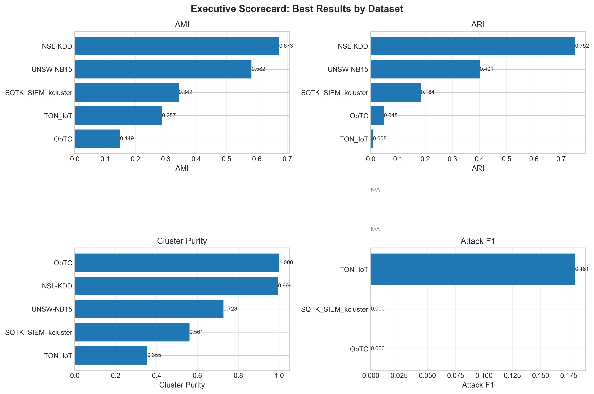
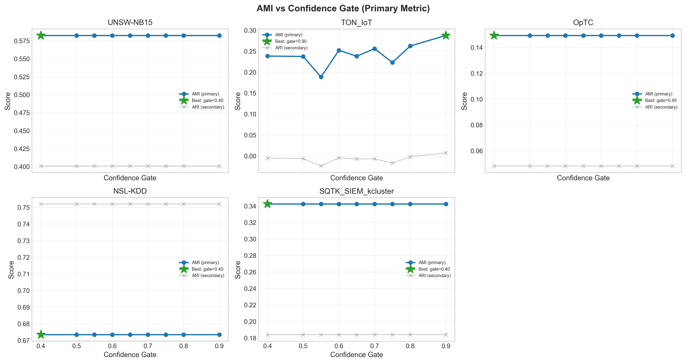
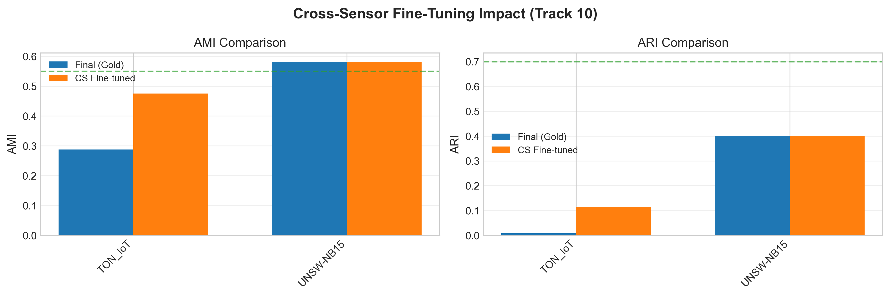
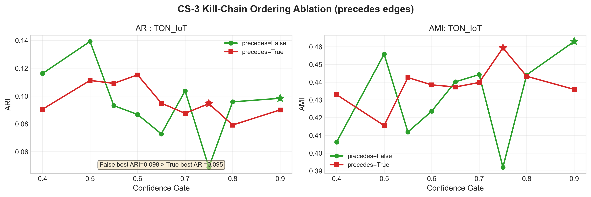
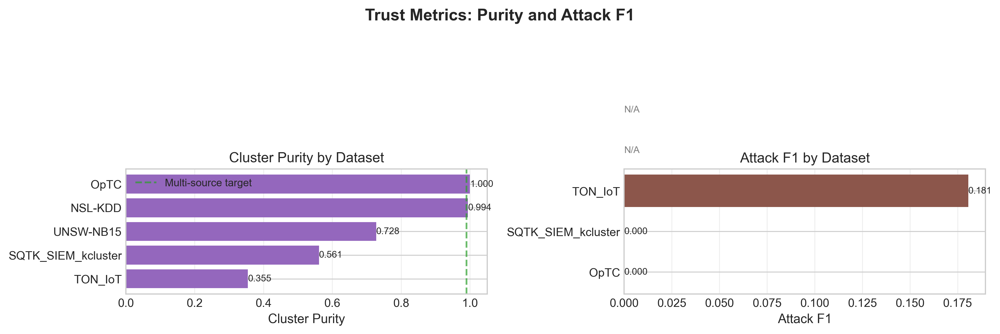
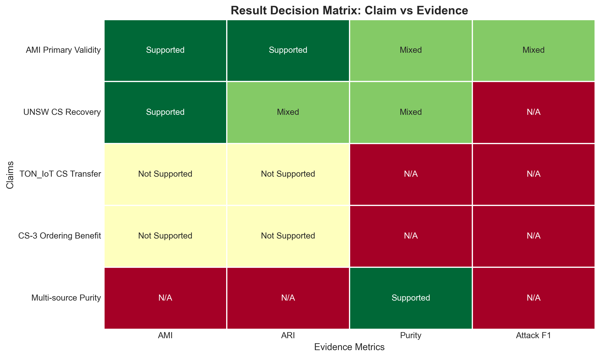

UNSW-NB15 meets Track 10 AMI target (0.582 ≥ 0.55). TON_IoT CS fine-tuning fails due to architecture mismatch; gold checkpoint (0.737 ARI) remains valid. CS-3 kill-chain ordering shows no benefit (precedes=False ARI=0.139 > precedes=True ARI=0.115).





